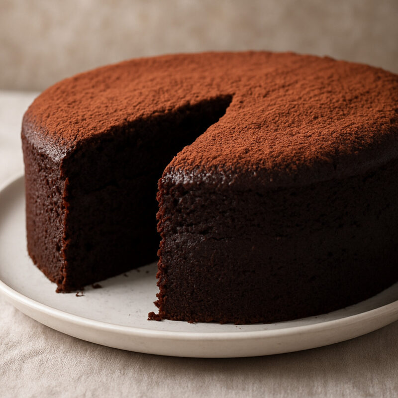

TORTA DE CHOCOLATE
Realizado por Lola Blanco y Constanza Picciuolo
Ingredientes
- 2 tazas harina leudante
- 1 taza azúcar
- 1 taza cacao (el que se utiliza para la chocolatada)
- 1/2 taza aceite
- 2huevos
- 1 taza agua hirviendo
Preparación
- 1- Primero se deben mezclar todos los ingredientes en un bowl, la harina, azúcar y cacao
- 2- Luego le agregamos la 1/2 tazar de aceite y los 2 huevos y mezclamos
- 3- Por último le agregamos el agua hirviendo y removemos hasta conseguir una mezcla homogénea
- 4- Enmantecar un molde y volcar la mezcla en el mismo
- 5-Llevar al horno con temperatura baja por 35 a 40 minutos
- 6- Pinchar con un palillo para verificar que la torta esté lista (tiene que salir limpio)
